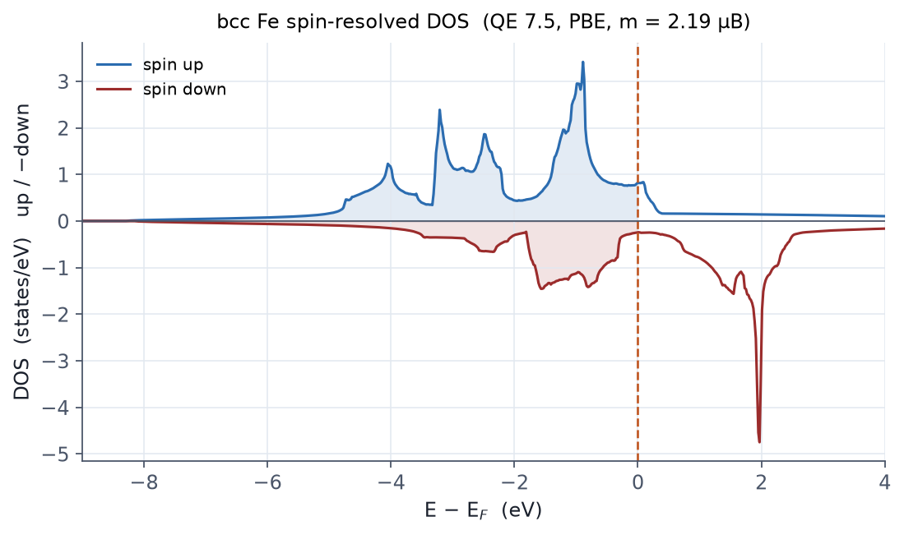

목적
첫 자성 계산입니다. 스핀 편극 SCF(nspin=2)로 bcc Fe의 강자성
바닥상태를 얻고, 자기모멘트를 실험과 비교합니다. 금속 + 자성이라는, 수렴이
까다로워지는 조합을 다루는 요령(12장)의 실전입니다.
새로 나오는 카드·변수
| 항목 | 역할 |
|---|---|
nspin=2 + starting_magnetization |
공선 스핀 편극, 초기 자화 (−1~1 비율) |
mixing_beta=0.3 + mixing_mode='local-TF' |
자성 금속의 mixing 처방 |
ecutrho = 10×ecutwfc |
Fe PAW의 큰 밀도 컷오프 요구 |
입력 파일
&CONTROL
calculation = 'scf'
prefix = 'fe'
outdir = './tmp/'
pseudo_dir = './pseudo/'
verbosity = 'high'
/
&SYSTEM
ibrav = 3 ! bcc
celldm(1) = 5.42 ! bohr (= 2.87 Å)
nat = 1
ntyp = 1
ecutwfc = 70
ecutrho = 700 ! Fe는 10배 이상 권장
occupations = 'smearing'
smearing = 'mv'
degauss = 0.02
nspin = 2
starting_magnetization(1) = 0.7
/
&ELECTRONS
conv_thr = 1.0d-8
mixing_beta = 0.3 ! 자성 금속은 낮게
mixing_mode = 'local-TF'
electron_maxstep = 200
/
ATOMIC_SPECIES
Fe 55.845 Fe.pbe-spn-kjpaw_psl.1.0.0.UPF
ATOMIC_POSITIONS (alat)
Fe 0.00 0.00 0.00
K_POINTS (automatic)
16 16 16 0 0 0
실행
mpirun -np 6 pw.x -nk 6 -in fe.scf.in > fe.scf.out
출력에서 확인할 것 — 실측
| 항목 | 실측값 (QE 7.5, PAW) | 비고 |
|---|---|---|
| 총에너지 | −329.26290531 Ry | |
| total magnetization | 2.19 μB/cell | 실험 2.22 μB — PBE가 거의 정확 |
| absolute magnetization | 2.32 μB/cell | total과 근접 → FM 배열 |
| 페르미 준위 | 17.4481 eV | 금속 |
total ≈ absolute라는 것이 강자성의 표지입니다. AFM이라면 total ≈ 0에 absolute만 큽니다 — 그 경우가 E10입니다.
스핀 분해 DOS — 추가 실측
같은 밀도 위에 nscf(20³, tetrahedra_opt) + dos.x를 얹어 스핀별 DOS를
뽑았습니다 (dos.x는 스핀 계에서 up/down 두 열을 출력합니다).

직접 써보기
starting_magnetization = 0.0으로 두면 어떻게 되나요? 비자성 해로 붕괴하는지 확인하세요.- 비자성(
nspin=1) 계산과 에너지를 비교해 자성 안정화 에너지를 구하세요. - PDOS(E7 절차)를 뽑아 스핀 up/down d-밴드의 교환 분리를 관찰하고, Löwdin 전하로부터 국소 모멘트를 읽어 셀 전체 자화와 비교하세요.
degauss를 0.05로 키우면 모멘트가 어떻게 변하나요?
흔한 실수
자성계에서 한 번 수렴한 해를 바닥상태로 단정하는 것 — 자성계는 준안정
해가 여럿입니다. 초기 자화를 바꿔(0.3 / 0.7 / −0.7) 여러 번 수렴시키고
에너지를 비교하세요. 그리고 starting_magnetization은 μB가
아니라 비율입니다 (03장).